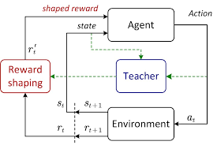
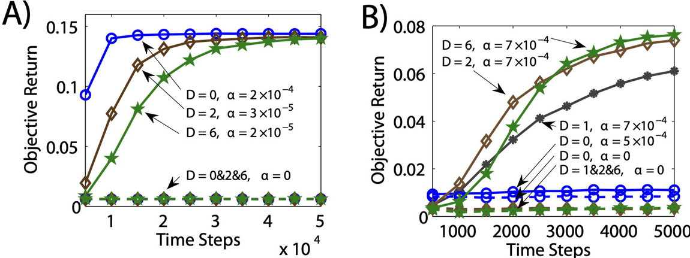
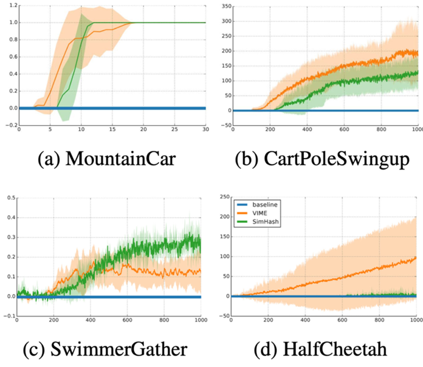
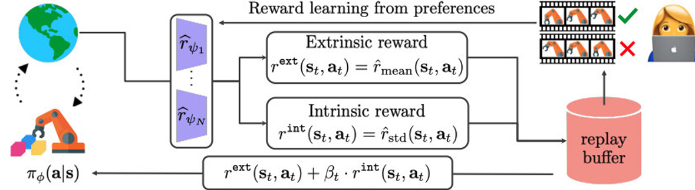
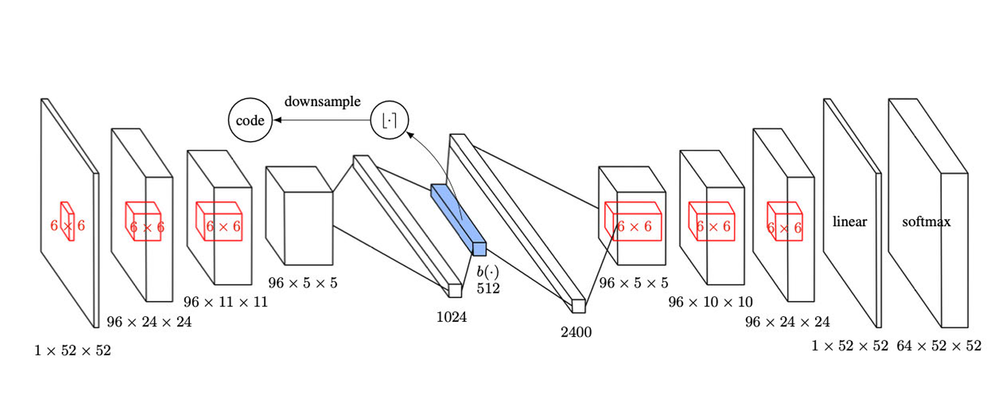

Table of Contents
- Introduction: The Central Role of the Reward Signal
- The Problem: Drowning in Silence with Reward Sparsity
- The Foundation: Potential-Based Reward Shaping (PBRS)
- Advanced Methods: Automating Reward Design
- Conclusion & Key Takeaways
- References
Introduction: The Central Role of the Reward Signal
In Reinforcement Learning (RL), an agent learns to make decisions by interacting with an environment. The entire learning process is guided by a single scalar signal: the reward. This reward function is the most critical component of an RL problem, as it implicitly defines the task’s goal (Eschmann, 2021). It is the mechanism through which we communicate what we want the agent to achieve.
However, a poorly designed reward signal can be ineffective or even misleading. Imagine training a robot to navigate a maze where it only gets a reward at the very end. It could wander aimlessly for days without learning anything meaningful. This is the problem of reward sparsity, one of the biggest bottlenecks preventing RL from being applied to more complex, real-world problems, especially in continuous time and space domains (Doya, 2000).
This article explores Reward Shaping, a powerful class of techniques designed to solve this. Instead of letting the agent wander in the dark, we provide it with intelligent “hints” to guide it toward the goal, dramatically accelerating learning while, crucially, attempting to preserve the original task’s objective.

The Problem: Drowning in Silence with Reward Sparsity
Reward sparsity is a scenario where meaningful rewards are received only after completing a long and specific sequence of correct actions. In all other states, the agent receives a reward of zero. This creates a cascade of critical issues:
- Inefficient Exploration: In a high-dimensional state space, the probability of stumbling upon a rewarding state through random exploration is infinitesimally small. The agent gets no learning signal to update its policy.
- The Credit Assignment Problem: Even if the agent gets lucky and finds the reward, it’s nearly impossible to determine which of the thousands of preceding actions were crucial for success and which were irrelevant or detrimental.
- Complete Learning Failure: In most practical scenarios, the agent fails to discover the reward at all. Its performance flatlines, and it never learns to solve the task.
The fundamental challenge is this: how can we provide a denser, more informative signal to the agent without accidentally changing the optimal behavior or introducing unintended loopholes that the agent can exploit?
The Foundation: Potential-Based Reward Shaping (PBRS)
The most celebrated and theoretically-grounded solution is Potential-Based Reward Shaping (PBRS). This technique, introduced by Ng, Harada, and Russell (1999), provides a way to add an auxiliary reward to guide the agent without altering the optimal policy.
The core idea is to define a potential function $\Phi(s)$ that estimates the “value” or “promise” of being in a particular state $s$. The new, shaped reward $R’$ is then calculated by adding the change in potential to the original environment reward $R$.
$$R’(s, a, s’) = R(s, a, s’) + \underbrace{\gamma\Phi(s’) - \Phi(s)}_{\text{Shaping Reward}}$$
- $R(s, a, s’)$: The original (sparse) environment reward.
- $\Phi(s)$: The potential function, which maps states to a scalar value. For a maze-solving robot, $\Phi(s)$ could be defined as the negative Euclidean distance to the goal.
- $\gamma$: The discount factor from the underlying Markov Decision Process.
When the agent moves from a state $s$ to a more “promising” state $s’$, the potential $\Phi(s’)$ is higher than $\Phi(s)$, resulting in a positive bonus reward. This provides an immediate, dense signal that guides the agent in the right direction.
The Theoretical Guarantee: Policy Invariance
The genius of PBRS lies in its theoretical guarantee of policy invariance. Ng et al. (1999) proved that any optimal policy learned with a potential-based shaped reward is also an optimal policy for the original, unshaped problem. This works because over any trajectory, the extra rewards form a telescoping sum that only depends on the start and end states, not the path taken. This ensures the long-term desirability of paths remains unchanged, making PBRS a “safe” way to accelerate learning.
Advanced Methods: Automating Reward Design
Learning the Reward Function
Policy Gradient for Reward Design (PGRD)

Shaping for Intelligent Exploration
Novelty-Driven (Hash-Based Exploration)

Uncertainty-Driven (RUNE)

an example of RUNE model

Inferring True Objectives to Prevent Reward Hacking
Manually designed rewards are often flawed and can be exploited by agents, a problem known as reward hacking. To mitigate this, we can infer the “true” objective from expert demonstrations rather than specifying it directly.
Inverse Reinforcement Learning (IRL)
IRL flips the standard RL problem on its head. Instead of using a reward function to find an optimal policy, IRL observes an expert’s policy to infer the reward function the expert was likely optimizing (Arora & Doshi, 2021). This is incredibly powerful for teaching agents complex behaviors where defining the reward explicitly is difficult, like driving a car. The goal is to find a reward function that makes the expert’s behavior appear near-optimal.
Conclusion & Key Takeaways
The journey to solve reward sparsity has pushed the field of RL from manual engineering to sophisticated, automated systems.
- Reward shaping is an essential technique for making RL practical in complex environments with sparse rewards.
- PBRS provides a safe, theoretically-grounded method to accelerate learning by providing dense “hints” without altering the optimal policy.
- Advanced methods automate reward design, offering greater autonomy and robustness. They allow agents to learn their own rewards, explore intelligently based on curiosity and uncertainty, and infer human objectives from demonstrations to avoid reward hacking.
- The continued evolution of these techniques is paving the way for more aligned, capable, and autonomous agents that can solve meaningful real-world problems.
References
Arora, S., & Doshi, P. (2021). A survey of inverse reinforcement learning: Challenges, methods and progress. Artificial Intelligence, 297, 103500.
Doya, K. (2000). Reinforcement learning in continuous time and space. Neural Computation, 12(1), 219–245.
Duan, Y., Chen, X., Houthooft, R., Schulman, J., & Abbeel, P. (2016). Benchmarking deep reinforcement learning for continuous control. Proceedings of the International Conference on Machine Learning, 1329–1338.
Eschmann, J. (2021). Reward function design in reinforcement learning. In Studies in Computational Intelligence (pp. 25–33). Springer.
Ibrahim, S., Mostafa, M., Jnadi, A., Salloum, H., & Osinenko, P. (2024). Comprehensive overview of reward engineering and shaping in advancing reinforcement learning applications. arXiv preprint arXiv:2408.10215.
Liang, X., Shu, K., Lee, K., & Abbeel, P. (2022). Reward uncertainty for exploration in preference-based reinforcement learning. arXiv preprint arXiv:2205.12401.
Ng, A. Y., Harada, D., & Russell, S. (1999). Policy invariance under reward transformations: Theory and application to reward shaping. Proceedings of the International Conference on Machine Learning, 278–287.
Sorg, J., Lewis, R. L., & Singh, S. (2010). Reward design via online gradient ascent. Advances in Neural Information Processing Systems.
Tang, H. (2017). #Exploration: A study of count-based exploration for deep reinforcement learning. Advances in Neural Information Processing Systems.
van Heeswijk, W. J. A. (2022). Natural policy gradients in reinforcement learning explained. arXiv preprint arXiv:2209.01820.
White, N. M. (1989). Reward or reinforcement: What’s the difference? Neuroscience & Biobehavioral Reviews, 13(2–3), 181–186.